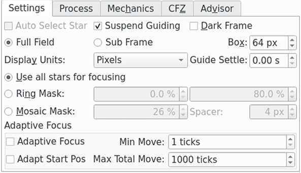
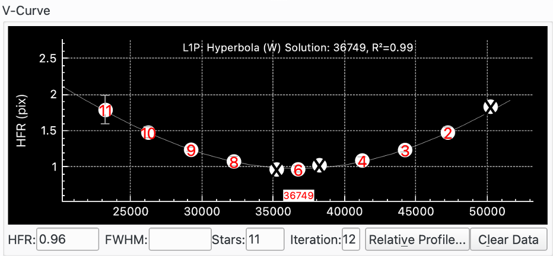
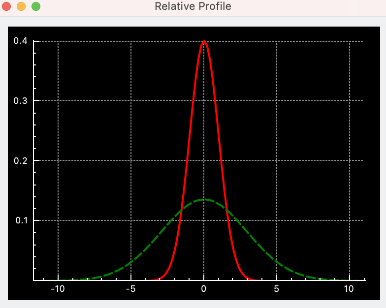

|
Afin d'effectuer la mise au point d'une image, Ekos a besoin d'utiliser une méthode numérique pour juger de la valeur de votre mise au point. Il est très facile pour un humain d'estimer si une image n'est pas nette puisque l'œil humain est très bon à cela, mais comment est-ce qu'Ekos peut le savoir ?
La méthode la plus essayée et testée est celle du Half-Flux-Radius (HFR), qui est la mesure en pixels de la largeur depuis le centre de l'étoile jusqu'à l'intensité accumulée dont la valeur est la moitié du flux total de l'étoile. À mesure que l'on se rapproche du point de mise au point optimale, la valeur du HFR diminue et atteint un minimum au point de mise au point avant d'augmenter à mesure que l'on s'éloigne de ce point. Cette méthode a été utilisée sur de multiples équipements et a montré sa robustesse dans beaucoup de situations.
En plus de la méthode HFR, Ekos gère d'autres mesures de mise au point, telles que le HFR ajusté, le FWHM, le nombre d'étoiles et la puissance de Fourier. La recommandation est de débuter avec cette méthode et une fois qu'elle est bien maîtrisée d'en tester d'autres.
Après qu'Ekos ait traité une image, il sélectionne l'étoile la plus brillante et commence à mesurer son HFR ou il sélectionne en ensemble d'étoiles correspondant aux critères qui ont été réglés et calcule un HFR moyen. Il peut sélectionner une étoile automatiquement ou vous pouvez lui indiquer quelle étoile utiliser. Il est en général recommandé de permettre à Ekos de choisir un ensemble d'étoiles.
Ekos propose 4 algorithmes différents de mise au point : Linéaire 1 passe, Linéaire, Itératif, Polynomial. Linéaire 1 passe est l'algorithme recommandé.
Linéaire 1 passe : cet algorithme débute en établissant une courbe en V puis interpole cette courbe pour trouver une solution. Puis il se déplace directement au minimum calculé. Les fonctionnalités principales incluent :
L'algorithme compense le jeu du moteur de mise au point.
L'algorithme est rapide puisqu'il nécessite une passe pour identifier la mise au point optimale.
L'algorithme utilise une régression plus sophistiquée pour identifier la position optimale de la mise au point.
L'algorithme peut être finement contrôlé par l'utilisateur grâce à de nombreux paramètres tels que la taille et le nombre de pas et la manière de gérer les points de valeur aberrantes.
Si le moteur de mise au point se comporte de manière déterministe, c'est-à-dire s'il se déplace toujours à la même position pour une commande donnée, alors cet algorithme est le meilleur.
Linéaire : dans cet algorithme, Ekos se déplace vers l'extérieur depuis son point de départ puis recule en prenant plusieurs points près de la position de mise au point optimale puis recule encore pour dessiner la courbe en V. Il effectue ensuite une régression sur la courbe quadratique et calcule le point optimal. Il repart ensuite vers l'extérieur en dépassant le point optimal, divise par deux le pas, et recule encore pour une seconde passe. Il essaie de suivre la courbe de la première passe et trouve la valeur de HFR minimale. Comme les mesures du HFR sont aléatoires, il utilise le pourcentage de tolérance pour décider si une solution a été trouvée. Les fonctionnalités principales incluent :
L'algorithme compense le jeu du moteur de mise au point.
L'algorithme est lent car il nécessite deux passes pour identifier la mise au point optimale.
L'algorithme utilise une régression pour déterminer la position optimale de la mise au point à la première passe puis utilise un pourcentage de tolérance pour s'arrêter aussi près que possible de ce HFR à la seconde passe.
L'algorithme peut être finement contrôlé par l'utilisateur grâce à de nombreux paramètres tels que la taille et le nombre de pas.
Si le moteur de mise au point se comporte de manière irrégulière, c'est-à-dire qu'une même commande aboutit à une position variable, alors cet algorithme sera la meilleur car il possède une tolérance interne pour gérer cette variabilité.
Itératif : dans cet algorithme, Ekos fonctionne de manière itérative en se déplaçant par pas discret, dont la valeur initiale a été décidée par l'utilisateur et ensuite par la pente de la courbe en V, pour être le plus près possible de la position optimale de la mise au point où il diminue ensuite la taille des pas pour se rapprocher encore plus de la position optimale. La procédure s'arrête quand le HFR mesuré se trouve dans une plage de tolérance configurable du HFR minimum enregistré. En d'autres termes, quand la procédure cherche une solution dans une plage étroite, il vérifie si le HFR courant est dans une plage de tolérance acceptable comparé au HFR minimum enregistré et si cette condition est remplie, la procédure de mise au point est considérée comme réussie. La valeur de tolérance par défaut est réglé à 1% et est suffisante pour la plupart des situations. Les options de pas spécifient le nombre initial de pas pour le déplacement du moteur. Si l'image est loin de la mise au point, on augmente ce nombre (c'est-à-dire plus grand que 250). Au contraire, si la position de mise au point est proche de la position optimale, on réduit cette valeur à environ 50. C'est un processus d'essais et d'erreurs pour trouver la bonne valeur de départ, mais Ekos ne l'utilise que pour le premier déplacement de mise au point, tous les suivants dépendant de la pente de la courbe en V. Les fonctionnalités principales incluent :
L'algorithme repose sur un jeu du moteur de mise au point bien contrôlé.
L'algorithme peut être rapide en utilisant un nombre minimum d'étapes.
L'algorithme fonctionne grâce à un paradigme « acceptable » selon lequel il s'arrête quand le HFR se trouve dans une plage de % de tolérance du minimum perçu.
Polynomial : dans cet algorithme, la procédure débute en mode Itératif mais une fois que l'on franchit l'autre côté de la courbe en V (quand les valeurs HFR recommencent d'augmenter après avoir diminué pour un moment), Ekos commence un calcul de régression polynomial afin de trouver une solution qui prédit la position HFR minimale. Les fonctionnalités principales incluent :
L'algorithme repose sur un jeu du moteur de mise au point bien contrôlé.
L'algorithme peut être rapide en utilisant un nombre minimum d'étapes.
L'algorithme utilise une régression pour déterminer la position optimale de mise au point.
Le groupe du train optique affiche le train optique actuellement sélectionné. C'est par défaut le train d'acquisition primaire mais d'autres trains peuvent être sélectionnés. Il consiste en :
: le train optique en cours d'utilisation dans l'onglet de mise au point. En passant la souris sur ce champ, une description plus détaillé du train sélectionné s'affichera.
: affiche la boîte de dialogue permettant des modifier les trains optiques.
Les paramètres de mise au point de chaque train optique sont automatiquement enregistrés.
Tout moteur de mise au point compatible INDI est géré. Il est recommandé d'utiliser des moteurs de mise au point à position absolue puisque leur position absolue est connue à la mise sous tension. Dans INDI, la position zéro du moteur de mise au point correspond à un tube complètement rentré. Quand la mise au point se fait vers l'extérieur, la position du moteur de mise au point augmente et inversement. Les types suivants de moteurs de mise au point sont gérés :
Position absolue : moteurs de mise au point à position absolue tels que RoboFocus, Moonlite, ASI ZWO
Position relative : moteur de mise au point à position relative.
Fondé sur une durée : les moteurs de mise au point fondés sur une durée n'ont pas de donnée de position mais ajuste la position de mise au point en se déplaçant pendant une certaine durée.
Le champ contient le moteur de mise au point du train optique actuel.
Pour les moteurs de mise au point à position absolue et relative, l'unité est le pas et les millisecondes pour les moteurs simples ou fondés sur le temps. Les boutons et peuvent ensuite être utilisés pour déplacer le moteur de ce nombre de pas défini dans le champ dans l'onglet Mécaniques.
Les champs de pas ont 2 parties :
Champ gauche : position actuelle du moteur de mise au point. Ce n'est que de l'affichage et est rafraîchi en même temps que le moteur de mise au point se déplace.
Champ droite : c'est une valeur en entrée que l'opérateur peut modifier pour obtenir une position particulière. Lorsque que le bouton est cliqué, le moteur de mise au point se déplacera depuis la position actuelle jusqu'à la position saisie en entrée.
Au départ, la valeur du champ de gauche affichera la position actuelle du moteur de mise au point. Le champ droite prendra comme valeur par défaut celle du train optique enregistré dans les réglages. Cela est utile par exemple lorsque vous avez plusieurs trains optiques qui utilisent le même moteur de mise au point mais dont la position de la mise au point est différente. Dans ce cas, la valeur du champ de gauche sera celle de la dernière valeur pour le train optique sélectionné. Ainsi, après avoir changé de matériel et choisi le train optique adéquat, un clic sur le bouton entraînera le moteur de mise au point à une position qui sera un bon point de départ.
Le bouton déplace le moteur de mise au point à la position indiquée dans le champ de droite.
Le bouton arrête le mouvement du moteur de mise au point.
Le bouton démarre l'exécution de la procédure de mise au point automatique. Le bouton l'arrête.
Le bouton démarre l'acquisition d'une image dont les réglages actuels proviennent de groupe APN et roue à filtres. Le bouton démarre l'acquisition en boucle jusqu'à ce que le bouton soit cliqué.
Certains algorithmes de mise au point essaient de se débrouiller quand la procédure débute loin de la position optimale de mise au point. Néanmoins, il est toujours mieux de débuter d'une position proche de la mise au point. Pour les premiers réglages, l'utilisation de l'acquisition et des boutons et simplifie la recherche de la position de mise au point en cherchant un HFR grossier des images. Lorsque l'acquisition en boucle est utilisée de cette manière, le graphique de la courbe en V est modifié pour afficher une série temporelle des images et leur valeur de HFR associée. Cela rend la procédure beaucoup plus simple à réaliser.
Si vous êtes complètement novice en astronomie, c'est toujours une bonne idée de se familiariser avec son équipement de jour. Cela inclut de trouver la position approximative de la mise au point sur un objet distant et permettra d'avoir un bon point de départ à la nuit tombée.
Cette section de paramètres gère les réglages de la caméra et des filtres à utiliser lors de la mise au point.
La première ligne de boutons de contrôle permet de régler les paramètres de la caméra.
Exp : la durée d'exposition en secondes.
Le bouton ouvre une fenêtre séparée affichant l'image de mise au point. Un nouveau clic bascule vers l'affichage intégré.
Le bouton ouvre une fenêtre séparée de l'afficheur FITS pour l'affichage de l'image de mise au point, en plus de celle affichée dans la fenêtre de mise au point.
Le bouton ouvre la fenêtre associée.
La ligne suivante de réglages permet de régler les paramètres de la caméra. Choisissez une valeur pour le groupement de pixels (binning) puis réglez le gain de la caméra ou son ISO.
Groupement de pixels : l'augmentation du groupement de pixels modifie l'échelle de l'image et permet d'obtenir des pixels plus clairs. Il n'est en général utile de grouper plus que 1x1 que si l'échelle de l'image est sur-échantillonnée et qu'une augmentation ne conduit pas à une perte de résolution.
Gain : régler le gain de la caméra utilisée pour la mise au point. Cette valeur doit être assez grande pour donner un motif d'étoile clair mais pas trop grande pour éviter que le bruit ajouté interfère avec l'opération de mise au point. Il sera nécessaire de tester plusieurs valeurs pour trouver la valeur optimale. Si vous ne savez pas où commencer, réglez le gain à un et ajuster depuis là.
ISO : règle l'ISO de la caméra utilisée pour la mise au point. Un peu de tâtonnement sera nécessaire pour trouver la valeur optimale.
La troisième ligne de boutons de contrôle gère la source de température et les filtres :
TS : choisissez la source de température depuis la liste déroulante. La température actuelle est affichée juste en dessous ainsi que la variation de température depuis la dernière mise au point automatique. C'est une pratique courante de relancer une mise au point quand la température varie significativement puisque cela altère la position de mise au point du télescope.
Filtre : choix du filtre à utiliser
La mise au point sera probablement plus aisée à obtenir en choisissant un filtre laissant passer le plus de lumière comme par exemple le filtre Lum. Cliquez sur l'icône de filtre pour ouvrir la fenêtre de dialogue des Réglages de filtres. Cela permet de régler un certain nombre de paramètres par filtre durant la mise au point automatique.
Le bouton permet de réinitialiser les réglages.
 |
Cette section décrit les outils de la mise au point actuellement disponibles.
Le bouton démarre l'exécution de l'inspecteur d'aberration. Le bouton peut être utilisé pour l'arrêter.
Le bouton lance l'outil de la zone critique de mise au point.
Le bouton lance l'outil Conseiller de mise au point.
 |
Les paramètres de configuration de la mise au point s'affichent en cliquant sur le bouton . Une boîte de dialogue avec trois panneaux s'ouvre :
Les paramètres sont spécifiques à chaque train optique. Cela permet d'avoir différentes configurations pour différents équipements. Les paramètres sont enregistrés quand ils sont modifiés, ainsi, au démarrage, c'est la dernière configuration du train optique sélectionné qui est chargée.
|  |
Paramètres de la section principale :
Sélection automatique d'étoile : ce réglage n'est activé que si Sous-trame est sélectionné. Dans ce cas, Ekos sélectionnera automatiquement une étoile pour la mise au point ; dans le cas contraire, l'opérateur devra choisir lui-même l'étoile en utilisant l'afficheur FITS.
Suspendre le guidage : cochez cette option pour suspendre le guidage durant la procédure de mise au point automatique. La raison est de prévenir le guidage d'avoir des problèmes avec des étoiles dont la mise au point n'est pas faite lors de la procédure de mise au point, comme par exemple avec un guide hors axe (OAG) monté sur le télescope primaire.
Trame Dark : cochez cette option pour réaliser une soustraction d'une trame Dark. Cette option peut être utile pour les images contenant beaucoup de bruit où un Dark préalablement acquis est soustrait de l'image de mise au point avant tout autre traitement.
Si des pixels chauds causent des problèmes de mise au point, sélectionnez des images Dark et utilisez soit un master Dark ou une carte de défauts.
Les trames Dark sont utilisées pour la mise au point, l'alignement et le guidage. Veuillez consulter la fonctionnalité de bibliothèques de Dark dans le module d'acquisition pour davantage de détails sur l'utilisation des trames Dark.
Plein Champ : utilise le plein champ de l'appareil. Dans ce mode, la mise au point va automatiquement sélectionner plusieurs étoiles pour la procédure de mise au point automatique. Une alternative à cela est Sous-trame.
Sous-trame : sélectionner pour utiliser une seule étoile pour la procédure de mise au point automatique. Une alternative à cela est d'utiliser Plein Champ où plusieurs étoiles seront utilisées. Selon les réglages de Sélection automatique d'étoile, soit l'opérateur aura à choisir l'étoile soit Ekos s'en chargera.
Taille de la boîte : règle la taille de la boîte qui délimite l'étoile de mise au point lors de l'utilisation d'une sous-trame. Augmentez si vous avez de très grosses étoiles. Pour la mise au point avec un masque de Bathinov, vous pouvez encore plus l'augmenter pour inclure les motifs de diffraction.
Afficher les unités : sélectionnez les unités à afficher sur la courbe en V de la procédure de mise au point automatique quand la méthode HFR ou FWHM est sélectionnée.
Stabilisation du guide : cette option est utilisée conjointement avec Suspendre le guidage. Elle permet d'attendre ce nombre de secondes pour que le train optique se stabilise après la procédure de mise au point automatique avant de reprendre le guidage.
Paramètres de la section sur les masques :
L'ensemble suivant de boutons radio est associé aux Options de masquage qui sont utilisées dans le mode Plein champ. L'effet des options de masquage peut être vu dans l'Afficheur FITS.
Utiliser toutes les étoiles pour la mise au point : choisissez cette option si toutes les étoiles du champ doivent participer à la mise au point.
Masque annulaire : cette option fournit deux champs d'entrée qui définissent une surface en forme de beignet recouvrant le champ de vue (CdV) de l'appareil. Les étoiles en dehors de cette région ne sont pas prise en compte dans le traitement. En réglant la valeur intérieure au dessus de 0 %, les étoiles au centre du CdV sont rejetées. Cela peut être utile pour éviter d'utiliser des étoiles de la cible de l'image (par exemple une galaxie) pour la procédure de mise au point. En réglant la valeur extérieure sous 100 %, les étoiles se trouvant sur les bords du CdV sont rejetées. Cela peut être utile si vous ne disposez pas d'une image flat allant jusqu'aux coins du CdV.
Masque de mosaïque : une mosaïque 3x3 est composée de tuiles du centre de l'image, de ses coins et de ses côtés. Cette option est utile si vous souhaitez inspecter la performance des optiques (vous connaissez peut-être ceci du script de l'inspecteur d'aberrations de PixInsight). La taille des tuiles peut être configurée en pourcent de la largeur de l'image avec la valeur du séparateur spécifiant l'espace entre les tuiles.
Il existe quatre cas d'utilisation pour le masque de mosaïque :
La vérification de la mise au point sur toute la surface du capteur : le masque permet une inspection visuelle facile et la comparaison des étoiles au centre, sur les bords et dans le coin du capteur. Cela est particulièrement utile pour les optiques présentant une aberration lorsque la mise au point n'est pas réalisée à 100%.
La correction de l'inclinaison de l'image : les grands capteurs sont particulièrement sensibles à une distance et une inclinaison du capteur. Dans de tels cas, l'image présente une aberration, surtout dans les coins. Si tous les coins sont touchés par le même effet, alors il est alors nécessaire de corriger les distances. Si ces aberrations sont différentes dans les coins, cela est typique d'une inclinaison du capteur.
La collimation des télescopes de Newton : l'inspection des images à une position légèrement éloignée de la mise au point est typiquement utilisée pour régler ces télescopes. Référez-vous par exemple à l'article de Tommy Nawratil The Photonewton Collimation Primer pour davantage de détails.
Exécution de l'outil de l'inspecteur d'aberration
Paramètres de la mise au point adaptative :
L'ensemble suivant de boutons est associé à la mise au point adaptative. L'idée ici est de conserver la mise au point du télescope en adaptant la position du moteur de mise au point en fonction de conditions environnementales sans avoir à lancer une procédure complète de mise au point automatique. Voir la section Mise au point adaptative pour davantage de détails.
Par exemple, la position de mise au point va varier en fonction de la température durant une session d'acquisition. En enregistrant la température entre les prises, il est possible de calculer la différence de température et ensuite de la convertir en un nombre de pas du moteur de mise au point à appliquer entre les prises.
Afin d'utiliser la mise au point adaptative il est nécessaire de régler certaines données de votre système. Vous devez en particulier indiquer à Ekos le nombre de pas (et dans quelle direction) de déplacement lorsque les conditions environnementales changent. Cela est expliqué dans la fenêtre popup du réglages du filtre. Cette fenêtre est ouverte en cliquant sur l'icône du filtre .
Les boutons de contrôle suivants sont disponibles :
Mise au point adaptative : sélectionnez cette option pour activer ce mode.
Déplacement minimale : le déplacement minimale de la mise au point adaptative autorisé.
Position de départ : cochez pour permettre à la mise au point adaptative de calculer la position de départ d'une passe de mise au point automatique. Cette position est la dernière position de bonne résolution pour un filtre donné, adaptées aux changements de conditions.
Par exemple, si la position actuelle du moteur de mise au point est 1000, la température de 4°C et que le filtre rouge est sélectionné (la dernière bonne position de mise au point pour le filtre rouge est 990 à 5°C et Ekos est configuré pour se déplacer de °3 Pas / °C), alors si l'option de position de départ est à Off, le moteur de mise au point automatique démarrera à 1000. Si elle est à On, elle démarrera à 990+(5-4)*3=993.
Cette fonctionnalité est utile pour s'assurer que le moteur de mise au point démarrera à une position proche du point de mise au point ce qui impliquera une courbe en V plus symétrique. Cela est particulièrement utile lors de changement de filtres qui ont une position de mise au point très différente.
Il est possible d'utiliser cette fonctionnalité seule sans la mise au point automatique. Il suffit pour cela de cocher la case et laisser la valeur de Pas / °C à zéro. Ainsi la position de départ de la mise au point automatique sera dépendante du filtre utilisé et démarrera chaque processus à la position de mise au point de la dernière position réussie pour le filtre en question.
Déplacement total maximal : la valeur totale maximale du moteur de mise au point permise pour la mise au point adaptative d'une session d'observation. Cela permet de limiter la course du moteur de mise au point en cas de problème. Par exemple, si la source de température rencontre un problème et échoue à donner une valeur correcte pendant que l'équipement n'est pas surveillé, cela pourrait aboutir à ce que l'algorithme tente de grands déplacements du moteur de mise au point.
Dès que cette valeur est atteinte, l'option Mise au point adaptative est décochée jusqu'à une intervention manuelle de l'opérateur.
Paramètres du processus de mise au point :
Détection : choix de l'algorithme de détection d'étoile. Chaque algorithme a ses forces et ses faiblesses. Il est recommandé d'utiliser SEP sauf en cas d'utilisation particulière. Voici ce qui est disponible :
SEP : la bibliothèque intégrée d'extraction de source et de photométrie (Source Extraction and Photometry). C'est la valeur par défaut.
Centroïde : une méthode d'extraction fondée sur une estimation de la masse de l'étoile autour du pic du signal.
Gradient : une méthode d'extraction d'une source unique fondée sur le filtre de Sobel.
Seuil : une méthode d'extraction d'une source unique fondée sur la valeur des pixels.
Bathinov : cette méthode de détection peut être utilisée quand un masque de Bathinov est utilisé pour la mise au point. Prenez d'abord une image, puis sélectionnez l'étoile sur laquelle faire la mise au point. Une nouvelle image sera prise et le motif de diffraction sera analysé. Trois lignes seront affichées sur le motif de diffraction montrant la qualité de la détection et de la mise au point. Quand le motif n'est pas bien détecté, le paramètre Nombre de lignes peut être ajusté pour améliorer la détection. La ligne avec les cercles aux deux bouts est un indicateur grossi pour la mise au point. Plus cette ligne est courte et meilleure sera la mise au point.
Profile SEP : si l'algorithme de détection d'étoiles est réglé à SEP, il faut ensuite choisir un paramètre de profil pour l'utilisation de l'algorithme. Il est recommandé d'utiliser le profile par défaut 1-Focus-Default comme point de départ.
Algorithme : choisissez l'algorithme pour la procédure de mise au point automatique :
Linéaire 1 passe : c'est l'algorithme recommandé. Il débute en établissant une courbe en V puis en interpolant cette courbe pour trouver une solution. Puis il se déplace directement à la solution calculée.
Cet algorithme gère l'ancien type de courbe quadratique ainsi que le nouveau résolveur Levenberg-Marquardt pour les courbes hyperboliques et paraboliques. Il déterminera aussi les poids des points de régression si l'option Utiliser les poids est cochée et exécutera une procédure d'ajustement si l'option Ajuster la courbe de régression est cochée.
Linéaire : cet algorithme construit une courbe en V avec approximativement un multiple de pas extérieur de chaque côté du minimum. Une fois cette courbe en V construite, une régression quadratique est réalisée sur cette courbe (forme parabolique) et l'utilise pour calculer la position du moteur de mise au point, ce qui donne la valeur minimale du HFR. Une fois cette valeur minimale identifiée, une seconde passe est réalisée avec des pas divisés par deux pour recréer la courbe de la première passe. L'algorithme s'arrête une fois que la valeur est dans la tolérance de la valeur minimale du HFR calculée lors de la première passe.
Itératif : déplace le moteur de mise au point par pas discret de taille initiale fixée. Une fois que la pente de la courbe est calculée, les tailles de pas suivants sont calculées pour atteindre une solution optimale. L'algorithme s'arrête dès que la valeur HFR mesurée se trouve dans la plage de tolérance définie.
Polynomial : débute avec la méthode itérative. Quand la position passe de l'autre côté de la courbe en V, une régression polynomiale est calculée pour déterminer la position de la solution minimale. Cet algorithme peut être plus rapide que la méthode itérative avec un bon ensemble de données.
Courbe de régression : le type de courbe pour la régression des points.
Hyperbole : interpole une hyperbole avec l'algorithme non-linéaire de moindres carrés fourni par la bibliothèque GNU Science GSL. Veuillez voir le résolveur Levenberg-Marquardt Solver pour davantage de détails.
Cela est l'option recommandée.
Parabole : interpole une parabole avec l'algorithme non-linéaire de moindres carrés fourni par la bibliothèque GNU Science GSL. Veuillez voir le résolveur Levenberg-Marquardt Solver pour davantage de détails.
Quadratique : utilise une équation quadratique avec l'algorithme de moindres carrés linéaire fourni par la bibliothèque GNU Science GSL.
Il n'est plus recommandé d'utiliser cette courbe.
Mesure : choisissez une mesure pour la procédure de mise au point automatique. Les options suivantes sont disponibles :
HFR : HFR est la mesure recommandée. À la détection d'une étoile, Ekos calculera le HFR de l'étoile. C'est la moitié du flux total de l'étoile contenu dans un cercle imaginaire autour du centre de l'étoile.
La position de la meilleure mise au point correspond au minimum de HFR.
HFR ajusté : cette fonctionnalité utilise un calcul ajusté du HFR qui tient compte du fait que le HFR des étoiles plus lumineuses est plus large que pour les étoiles peu lumineuses.
L'algorithme ajuste la valuer du HFR mesuré, généralement vers le haut, de telle sorte que le HFR obtenu par cette méthode est plus grand que les valeurs HFR mesurées. Cela ne signifie pas que vous obtenez de moins bons résultats avec cette méthode mais simplement que la mesure est différente.
Avec cette mesure, il est courant d'obtenir des barres d'erreur plus petites pour l'ensemble de données quand Utiliser les poids est utilisée.
La position de la meilleure mise au point correspond au minimum du HFR ajusté.
FWHM : cette fonctionnalité ajuste une surface gaussienne à chaque étoile et l'utilise pour calculer le FWHM de l'étoile. Le FWHM est la largeur d'un cercle (ou d'une ellipse) autour du centre de l'étoile et qui atteint le bord de l'étoile à la moitié de son intensité maximale.
La meilleure position de la mise au point correspond au minimum de FWHM.
Attendez-vous que le FWHM soit environ le double du HFR de l'étoile.
# étoiles : cette fonctionnalité calcule le nombre d'étoiles de l'image et utilise ce nombre pour une mesure de la mise au point. L'idée est qu'en s'approchant de plus en plus de la position de mise au point, davantage d'étoiles deviendront détectables.
L'avantage de cette mesure est sa simplicité puisqu'elle ne requiert pas de calculer le HFR ou le FWHM.
La position de meilleure mise au point correspond au nombre maximal d'étoiles.
Fourier : cette méthode utilise une transformée de Fourier de l'image et calcule sa puissance dans l'espace des fréquences. L'hypothèse est que pour une image astronomique d'étoiles et de fond, les étoiles suivront une gaussienne. Dans une transformée de Fourier, une gaussienne se transforme en une autre gaussienne ; mais les étoiles les plus larges se transformeront en une gaussienne plus étroite dans l'espace des fréquences et vice-versa. Ainsi, à la position de meilleure mise au point, la somme en espace des fréquences, qui est une mesure de la puissance, sera un maximum.
Cette méthode implémente l'idée principale de Tan et Schulz dans leur papier A Fourier method for the determination of focus for telescopes with stars. Veuillez noter que d'autres idées sont formulées dans ce papier mais ne sont pas implémentées dans Ekos.
Cette méthode est relativement nouvelle dans la communauté astronomique et ne requiert pas de détection d'étoiles. Tan et Schulz rapportent de bons résultats autant avec des télescopes amateurs que professionnels.
PSF : si Mesure est réglé à FWHM, alors le composant graphique PSF peut être sélectionné pour être utilisé pour appliquer la régression de la surface à l'étoile. Pour le moment seule la méthode gaussienne est proposée.
Utiliser les poids : cette option est encore expérimentale et n'est disponible qu'avec l'algorithme de mise au point linéaire à 1 passe et le type de courbe hyperbole et parabole. Elle nécessite l'option Plein Champ. Elle calcule la déviation standard du HFR des étoiles et utilise le carré de cette valeur (la variance mathématique) comme poids pour la courbe de régression. L'avantage de cette méthode est que les points moins fiables, de déviation standard du HFR plus grande, auront un poids plus petit que les points plus fiables. Si cette option n'est pas cochée, et pour toutes les courbes de régression n'autorisant pas cette option, tous les points auront un poids identique dans le calcul de régression.
La déviation standard est dessinée comme barre d'erreur sur la courbe en V pour chaque ensemble de points.
Il est recommandé de cocher cette option.
Voir le résolveur de Levenberg-Marquardt pour davantage de détails.
Limite R² : cette option est encore expérimentale et n'est disponible qu'avec l'algorithme de mise au point linéaire à 1 passe et le type de courbe hyperbole et parabole. Faisant partie de l'algorithme linéaire à 1 passe, le degré de la courbe de régression, ou coefficient de détermination R² est calculé. Cette option permet de définir une valeur minimale acceptable pour R² qui est comparée à la valeur obtenue par la régression. Si la valeur minimale n'a pas été atteinte, alors la procédure de mise au point automatique est relancée. Néanmoins, une seule relance du processus sera réalisée et même si le minimum de R² n'a pas été atteinte, le processus de mise au point automatique sera considérée comme étant un succès.
Testez pour trouver une valeur appropriée mais un bon point de départ serait 0,8 ou 0,9.
Affiner la courbe de régression : cette option n'est disponible qu'avec l'algorithme de mise au point linéaire à 1 passe et le type de courbe hyperbole et parabole. Si cette option est cochée et à la fin du balayage de l'ensemble de points, Ekos calcule la courbe de régression et mesure le R². Le critère de Peirce fondé sur la méthode de Gould est ensuite appliqué pour identifier les points aberrants. Veuillez consulter la page sur le critère de Peirce pour les détails (inclus les articles originaux de Peirce et de Gould qui sont référencés dans les notes). Si le critère de Peirce détecte au moins une valeur aberrante, alors une nouvelle courbe est calculée sans ces valeurs aberrantes. Le R² est calculé à nouveau et comparé à l'ancien. S'il est meilleur, la dernière passe est utilisée et sinon, c'est la première (avec les valeurs aberrantes) qui est utilisée.
Les valeurs aberrantes sont clairement indiquées sur la courbe en V grâce à un X sur les points.
Il est recommandé de cocher cette option.
Moyenner sur : nombre d'images à acquérir pour chaque point de données. Il est généralement raisonnable de commencer à 1 mais l'augmentation de ce nombre résultera dans un processus de calcul de la moyenne pour la mesure des étoiles sélectionnées.
Avertissement
Donut Buster : c'est encore une fonctionnalité expérimentale qui devrait être utilisé avec précaution. L'idée ici est d'améliorer la mise au point pour des télescopes ayant une obstruction centrale qui crée des étoiles en forme de beignet lorsque loin de la position de mise au point. Il est probable que dans le futur il y aura davantage de fonctionnalités développées. Dans cette version, cette fonctionnalité est davantage ciblée vers la récolte de données afin d'améliorer la mise au point.
Avertissement
Facteur de dilatation du temps : cette fonctionnalité de Donut Buster est encore expérimentale et devrait être utilisée avec précaution. Elle règle la durée d'exposition à partir de la valeur de la mise au point automatique saisie dans le champ d'exposition pour les points les plus éloignés de la mise au point. Les points proches de la mise au point ne sont pas impactés. Par exemple, si la mise au point est réglée à 2s et que le facteur de dilatation du temps est réglé à 4, la mise au point automatique se déplace vers l'extérieur pour son premier point et la durée d'exposition sera de 2s * 4 = 8s. Pour les points suivants, la durée d'exposition est réduite à 2s autour de la position de mise au point optimale. À mesure que le moteur de mise au point passe la position optimale, la durée sera augmentée à 8s pour le dernier point.
Le but de cette méthode est d'augmenter la luminosité des points loin de la position optimale qui sont par nature moins brillants que les points proches et donc plus difficile à résoudre par rapport au bruit ambiant.
Cette fonctionnalité implique que le processus de mise au point automatique est lancé près de la position optimale de mise au point.
Si Détection est positionné à Seuil, alors les champs additionnels sont disponibles :
Seuil : la valeur en pourcentage du seuil est utilisée pour détecter les étoiles pour l'algorithme de détection Seuil. Augmentez cette valeur pour restreindre le centroïde aux cœurs brillants. Diminuez-la pour inclure les étoiles floues.
Si Détection est positionné à Bahtinov, alors les composants graphiques additionnels sont disponibles :
Nombre de lignes : le nombre de lignes affichées à l'écran lors de l'utilisation d'un masque de Bathinov.
Sigma : le sigma du flou gaussien appliqué à l'image avant d'appliquer l'algorithme de détection des bords de Bathinov.
Taille du noyau : la taille du noyau du flou gaussien appliquée à l'image avant d'appliquer l'algorithme de détection des bords de Bathinov.
Si Algorithme est positionné à Linéaire ou Itératif, alors les composants graphiques additionnels sont disponibles :
Tolérance : le pourcentage de tolérance est le critère d'arrêt de la procédure de mise au point automatique. Durant cette procédure, les valeurs HFR sont enregistrées et une fois que le moteur de mise au point est proche de la position optimale, il compare les HFR aux valeurs de HFR minimales et s'arrête dès qu'une valeur HFR est dans cette plage de tolérance. Diminuez cette valeur pour restreindre le rayon de la solution et inversement.
Avertissement
Veuillez noter que si cette valeur est trop faible, il est possible que l'algorithme entre dans une boucle qui fera échouer la procédure de mise au point automatique.
 |
Paramètres de la mécanique de la mise au point :
Course : cette option spécifie la manière dont le moteur de mise point avance pour produire la courbe en V de laquelle la solution de mise au point sera calculée.
Les options suivantes sont disponibles :
Classique : c'est le réglage recommandé. La course vers l'intérieur suit une série de pas de taille égale (Taille initiale de pas). L'algorithme inclut de la logique pour déterminer le moment d'arrêt mais rend la détermination du nombre exact de pas imprévisible mais devrait être de l'ordre 2 * (Multiple de pas extérieur) + 1.
Cette méthode est tolérante aux échecs d'ajustement de la courbe au dernier pas où elle avancera d'un pas supplémentaire et essaiera à nouveau de trouver une solution. Elle est également tolérante à une position de départ éloignée de la position de mise au point point et est par conséquent un bon choix pour la première exécution de la procédure de mise au point automatique.
Parce que cette course est tolérante à des montages très peu parfaits, c'est un choix conservateur, mais au prix de davantage de pas et donc de temps du processus de mise au point automatique.
Pas fixes : cette option est disponible pour l'algorithme linéaire à 1 passe. Elle est similaire à Classique mais Pas fixes est utilisée pour contrôler le nombre total de pas utilisé.
Cet algorithme est plus prévisible que Classique puisqu'il utilise un nombre de pas défini (et sera ainsi plus rapide), mais est moins tolérant aux problèmes d'ajustement de courbe près des derniers points et doit donc être démarré près de la position de mise au point.
Lorsque sélectionnée, l'option Multiple de pas extérieur est remplacée par Pas fixes.
Mélange CFZ : cette option est disponible pour l'algorithme linéaire à 1 passe. C'est une variante de Pas fixes et donc les commentaires sur cette course sont applicables ici aussi.
La différence entre Mélange CFZ et Pas fixes réside dans le fait que près du centre de la solution (qui devrait être près de la zone critique de mise au point CFZ), l'algorithme utilisera des pas de la moitié de la taille initiale.
Stabilisation du moteur de mise au point : règle le nombre de secondes à attendre après déplacement du moteur de mise au point et avant de débuter une nouvelle acquisition. La raison est d'éviter toute vibration du train optique qui pourrait affecter la prochaine image.
Taille initiale du pas : règle la taille de pas utilisée par différents algorithmes de mise au point. Pour les moteurs de mises au point, cela correspond aux nombres de pas ; pour ceux fondés sur le temps, cela correspond aux nombres de millisecondes.
Multiple du pas extérieur : utilisé par les algorithmes de mise au point linéaire à 1 passe et linéaire dans la course classique. Ce paramètre spécifie le nombre initial de pas vers l'extérieur au début de la procédure de mise au point automatique.
Nombre de pas : utilisé par l'algorithme linéaire à 1 passe pour les courses à pas fixes et le mélange CFZ. Ce paramètre spécifie le nombre total de pas du moteur de mise au point pour créer la courbe en V lors de la procédure de mise au point automatique.
Déplacement Max : place des bornes sur le déplacement depuis la position courante qui est autorisé pour l'algorithme de mise au point automatique. La raison est d'éviter que le moteur de se déplace trop et ainsi le protège de s'endommager. Toutefois, il faut que la valeur soit assez grande pour permettre au moteur de se déplacer suffisamment pour terminer la procédure de mise au point automatique.
Taille maximale du pas : utilisé par l'algorithme itératif pour limiter la taille maximale de pas qui peut être utilisé.
Jeu du pilote : voir la section sur le Jeu.
Il existe deux schémas d'utilisation :
Mettez 0 à Jeu du pilote pour désactiver et gérer ce jeu ailleurs.
Mettez une valeur positive à Jeu du pilote pour que ce soit le pilote du périphérique qui gère le jeu. Veuillez noter que ce champ n'est modifiable que pour les pilotes gérant le jeu.
Ce champ est le même que celui affiché dans le tableau de bord Indi du moteur de mise au point. Il peut être réglé aux deux endroits.
Balayage de la mise au point automatique : voir la section concernant le Jeu.
Il existe deux schémas d'utilisation :
Mettez 0 à Balayage de la mise au point automatique pour désactiver et gérer le jeu ailleurs.
Mettez une valeur positive à Balayage de la mise au point automatique pour que le module de mise au point gère le jeu.
Délai d'acquisition : spécifie le nombre de secondes à attendre pour qu'une image acquise soit reçue avant de déclarer une expiration du délai. Cela ne devrait être déclenché que s'il y a des problèmes avec l'appareil photo durant le processus de mise au point, ainsi réglez à une valeur suffisamment haute pour éviter que cela n'intervienne durant les opérations normales.
Expiration du mouvement : spécifie le nombre de secondes à attendre que le mouvement du moteur de mise au point soit à la position requise avant de déclarer une expiration du délai. Cela ne devrait être déclenché que s'il y a des problèmes avec le moteur de mise au point, ainsi réglez à une valeur suffisamment haute pour éviter que cela n'intervienne durant les opérations normales.
Paramètres de la mise au point de la CFZ :
Algorithme : ce champ spécifie l'algorithme de la CFZ. La raison de ceci est de calculer la CFZ de l'équipement attaché au train optique. Il n'est pas nécessaire d'utiliser ceci pour obtenir une mise au point réussie, mais cela fournit de l'information utile pour une configuration correcte.
Cet algorithme nécessite un peu de connaissance pour le configurer correctement. Il existe quantité d'information sur Internet.
L'idée de l'onglet CFZ est de débuter avec les données du train optique de l'onglet de mise au point et utilise cela pour calculer la CFZ. L'opérateur peut ajuster les paramètres pour simuler des modèles de scénarios pour voir comment cela affecte la CFZ. Le bouton Réinitialiser à OT permet de réinitialiser les valeurs à celle du train optique.
Si la case Affichage est cochée alors la CFZ est dessinée sur la courbe en V après que la procédure de mise au point ce soit terminée avec succès.

Il est nécessaire d'indiquer la Taille de pas (en microns) qui précise la distance d'un pas par rapport au plan focal. La relation est normalement linéaire pour les réfracteurs entre les déplacements du tube et l'éloignement du plan focal. Veuillez vous référer aux données de votre télescope pour obtenir cette information.
Les algorithmes suivants sont disponibles :
Classique : c'est le réglage recommandé. L'équation utilisée est affichée en haut à droite du panneau et est l'équation la plus utilisée sur l'Internet. Elle provient d'un traitement d'optique linéaire qui utilise un disque d'Airy et est connue pour avoir quelques limitations. Elle inclut pour cette raison un facteur de tolérance qui peut être ajusté par l'opérateur. Par exemple dans l'article souvent cité « In perfect Focus » par Don Goldman et Barry Megdal paru dans Sky & Telescope 2010, ils suggèrent d'utiliser t=1/3.
Front d'onde : l'équation utilisée est affichée en haut à droite du panneau. Elle provient d'une approche de front d'onde de la CFZ. Elle contient également des limitations et pour cette raison elle inclut un facteur de tolérance qui peut être ajusté par l'opérateur.
Gold : cette méthode est fondée sur le travail de Gold Astro qui est présenté ici.
Tolérance : cette valeur est utilisée par les algorithmes Classique et Front d'onde et est un facteur d'échelle dont la valeur est comprise entre 0 et 1.
Pour l'algorithme Classique, Goldman et Megdal suggère la valeur 1/3.
Pour l'algorithme du front d'onde, certains suggèrent la valeur 1/3 ou même 1/10.
Tolérance (τ) : cette valeur est utilisée pour l'algorithme Gold et est une tolérance de la mise au point exprimée comme un pourcentage de la qualité totale du ciel (seeing). Le site web de Gold suggère une valeur de 3 à 5 % pour un bon moteur de mise au point et 1 à 2 % pour les meilleurs moteurs. Pour davantage d'informations, veuillez consulter le site web de Gold Astro.
Affichage : cochez cette case pour afficher la CFZ calculée sur la courbe en V après une exécution réussie de la mise au point automatique. Elle sera affichée comme une moustache jaune.
Réinitialiser le train optique : cliquez sur ce bouton pour réinitialiser les paramètres à leur valeur par défaut obtenu du train optique actuellement utilisé.
Longueur d'onde (λ) : c'est la longueur d'onde de la lumière à utiliser. Sa valeur est obtenue du filtre actuellement utilisé. N'oubliez pas de régler ceci dans les Réglages de filtres de vos filtres.
Ouverture (A) : c'est l'ouverture du télescope en mm. Sa valeur est obtenue du train optique actuellement utilisé.
Ratio de la focale (f) : c'est le ratio de la focale du télescope. Sa valeur est obtenue du train optique actuellement utilisé.
FWHM (θ) : cette valeur est utilisée par l'algorithme Gold et est la qualité totale du ciel (seeing). C'est la contribution combinée de la limite de diffraction de votre télescope et de la qualité astronomique du ciel (seeing). Le site web de Gold Astro décrit la manière d'approximer ce total une fois les contributions individuelles obtenues.
CFZ : c'est la CFZ calculée en microns et en pas
Taille de pas : cette valeur doit être indiquée par l'opérateur (puisqu'elle ne peut pas être calculée par Ekos). Elle mesure la distance d'un pas en microns dans le plan focal.
Pour un réfracteur, c'est la distance de déplacement du tube quand le moteur de mise au point se déplace d'un pas. Vous pouvez peut-être obtenir cette valeur des spécifications de votre moteur de mise au point (le nombre de pas pour un tour complet du moteur) et du pas de filetage de votre télescope ainsi que de tout autre engrenage impliqué dans le mouvement.
Alternativement, vous pouvez mesurer la distance totale de mouvement de tube depuis la position fermée jusqu'à l'ouverture complète (faites attention de ne pas forcer le tube) à l'aide d'une règle. En prenant la différence (en pas), vous obtiendrez le nombre de pas de déplacement. À partir de cela, vous pouvez calculer la distance en microns d'un seul pas.
Les autres types de télescope ont une autre manière d'ajuster le plan focal, comme par exemple, en déplaçant les miroirs primaires et secondaires. Vous devrez obtenir la taille de pas de la documentation ou trouver comment la mesurer en tenant compte de ce qui a été décrit ci-dessus.
CFZ de l'appareil : la taille de pixel de l'appareil attaché via le train optique peut avoir un effet limitant sur la CFZ. Par conséquent, une CFZ équivalente pour l'appareil attaché est calculée en supposant une limite de Nyquist de 2*.
CFZ finale : c'est la plus grande des valeurs entre la CFZ calculée en utilisant l'algorithme choisi pour les paramètres spécifiés et la CFZ de l'appareil. C'est la valeur affichée et donc celle effective de votre équipement.
Ceci est le panneau du conseiller de mise au point. C'est une fonctionnalité d'assistance à la gestion des paramètres de mise au point.
Le but de ce conseiller de mise au point est d'aider les personnes qui ont des difficultés pour utiliser le module de mise au point d'Ekos. Ce module est riche en fonctionnalités et contient beaucoup de paramètres qui doivent être réglés de manière cohérente entre eux pour donner de bons résultats. Le conseiller est conçu pour aider à régler les paramètres de base pour obtenir la mise au point, mais n'est néanmoins pas conçu pour obtenir la meilleure mise au point possible pour votre équipement ; il sera donc nécessaire d'expérimenter avec votre montage pour obtenir cela. Mais cela est un bon point de départ pour ces tests.
Ainsi, le conseiller de mise au point est destiné aux opérateurs moins expérimentés.
Si le conseiller de mise au point ne donne pas de bons résultats, pourquoi ne pas ouvrir une discussion sur le forum afin de permettre de l'améliorer pour donner de meilleurs résultats dans le futur ? Cela permettra de l'améliorer avec le temps.
En cliquant sur le bouton du conseiller de mise au point, une série de paramètres est recommandée, fondée sur le train optique que vous êtes en train d'utiliser dans le module de mise au point.
En haut du panneau est affiché de l'information concernant le train optique utilisé. Ensuite, six lignes sont affichées liées aux différents ensembles de paramètres utilisés par le module de mise au point. Et à côté de chaque ligne il y a une case à cocher permettant d'utiliser les données des recommandations du conseiller pour les champs de mise au point associés.
Les paramètres de mise au point sont regroupés de la manière suivante :
Taille de pas : c'est la taille de pas recommandée, qui est un paramètre critique. La valeur provient de la boîte de dialogue de la zone critique de mise au point (CFZ). Ainsi, la première chose à faire est de configurer ce panneau et y mettre une valeur raisonnable pour la CFZ. Alternativement, si vous avez obtenu une bonne valeur pour votre équipement d'autres sources, vous pouvez simplement la saisir ici.
Multiple de pas extérieur : c'est le multiple de pas extérieur à utiliser.
Appareil & paramètres de la roue à filtre : ce sont les paramètres de la section Appareil & Roue à filtres de l'écran de mise au point. En survolant cette étiquette avec la souris, vous pouvez voir dans l'info-bulle les valeurs recommandées par le conseiller de mise au point.
Paramètres des réglages : ce sont les paramètres du panneau des Réglages de la mise au point de l'écran de mise au point. En survolant cette étiquette avec la souris, vous pouvez voir dans l'info-bulle les valeurs recommandées par le conseiller de mise au point.
Paramètres du processus : ce sont les paramètres du panneau du Processus de mise au point de l'écran de mise au point. En survolant cette étiquette avec la souris, vous pouvez voir dans l'info-bulle les valeurs recommandées par le conseiller de mise au point.
Paramètres de la mécanique : ce sont les paramètres du panneau de la Mécanique de la mise au point de l'écran de mise au point. En survolant cette étiquette avec la souris, vous pouvez voir dans l'info-bulle les valeurs recommandées par le conseiller de mise au point.
Aide : cliquez sur ce bouton pour obtenir de l'aide sur l'utilisation du conseiller de mise au point.
Mettre à jour les paramètres : cliquez sur ce bouton pour accepter les recommandations du conseiller de mise au point et mettre à jour les paramètres quand la case à cocher associée Mise à jour est cochée…
Cliquez sur l'icône de réglages des filtres depuis le module Acquisition ou le module de Mise au point pour ouvrir la fenêtre de réglages des filtres. Elle permet à l'opérateur de configurer les données de chaque filtre qui sont utilisées par de nombreuses fonctions du système.
La mise au point avec des filtres différents peut être réalisée de trois manières différentes dans Ekos.
Mise au point automatique directe : quand le module Acquisition change de filtre, il est possible de refaire une mise au point automatique pour ce filtre. La durée d'exposition pour ce filtre est obtenue du champ Durée d'exposition. Cela permet par exemple d'augmenter la durée d'exposition des filtres à bande étroite par rapport à des filtres à large bande pour la mise au point automatique.
Cochez Mise au point automatique pour utiliser le filtre de cette manière.
Mise au point automatique pour filtre verrouillé : il est possible de spécifier un filtre verrouillé quand il est requis d'utiliser ce filtre pour la mise au point. Par exemple, si un filtre Ha est utilisé et qu'une mise au point automatique est nécessaire, il est possible de lancer une mise au point automatique avec le filtre de luminance et une fois fait, d'ajuster la position de la mise au point en décalant la position d'une valeur correspondant à la différence de position entre les mises au point du filtre Ha et du filtre de luminance (100 pas dans cet exemple). Cela est utile quand, par exemple, il est difficile d'effectuer de mettre au point avec certains filtres qui demandent des durées d'exposition excessivement longues. Veuillez noter que cette approche peut également être utilisée avec le module d'alignement pour une résolution astrométrique.
Pour utiliser un filtre de cette manière, cochez Mise au point automatique, spécifiez le Filtre verrouillé à utiliser et veillez que le décalage entre ce filtre et le Filtre verrouillé est bien réglé.
Utiliser décalages : il est possible d'utiliser des décalages pour les filtres pour ajuster la mise au point quand on permute les filtres sans exécuter de mise au point automatique. Cela nécessite un peu de travail préparatoire mais a l'avantage de réduire le nombre de passes de mise au point automatique et par conséquent le temps consacré à ces opérations.
Pour utiliser cette fonctionnalité, il est nécessaire de déterminer les positions relatives de mise au point entre chaque filtre que vous souhaitez utiliser. Par exemple si les filtres de luminance et rouge ont la même position de mise au point (ils sont parfocales) mais que la position de mise au point du filtre vert se trouve 300 pas plus loin que le filtre de luminance (ou rouge), alors les décalages seront respectivement de 0, 0 et 300. Si une séquence est créée pour prendre 10 poses de luminance, puis 10 de rouge et 10 de vert, alors au départ (puisque Mise au point automatique est cochée) sera exécutée une mise au point automatique avec le filtre de luminance et ensuite 10 poses seront prises. Le module Acquisition changera ensuite de filtre pour le rouge. Comme ce filtre n'a pas la case Mise au point automatique cochée, il n'y aura pas de mise au point automatique et Ekos va vérifier le décalage entre le rouge et la luminance. Dans ce cas, on aura 0 - 0 = 0. Par conséquent le moteur de mise au point ne se déplacera pas et 10 poses de rouge seront prises. Puis le filtre passera du rouge au vert. Comme l'option n'est pas non plus cochée, il n'y aura pas de mise au point automatique et Ekos vérifiera le décalage entre le vert et le rouge. Maintenant, 300 - 0 = 300. Le moteur de mise au point se déplacera de 300 pas vers l'extérieur et 10 poses de vert seront prises.
Pour utiliser un filtre de cette manière, décochez Mise au point et veillez à ce que les décalages de tous les filtres de la séquence sont bien réglés.
Les décalages peuvent être soit déterminés en exécutant la procédure de mise au point automatique avec différents filtres et en calculant manuellement les décalages relatifs et en les saisissant dans la table, soit en utilisant l'outil Détermination des décalages.
Configurer les réglages de chaque filtre dans la table :
Filtre : nom du filtre
Durée d'exposition : réglage de la durée d'exposition (en secondes) à utiliser lors d'une mise au point automatique avec ce filtre. La valeur par défaut est 1.
Décalage : réglage des décalages relatifs. Ekos modifiera le décalage de position de mise au point s'il y a une différence entre le filtre actuel et le filtre cible. Par exemple et étant donné les valeurs dans l'image d'exemple, si le filtre actuel est Rouge et le prochain filtre est le Vert, alors Ekos indiquera au moteur de mise au point de se déplacer de +300 pas. Les valeurs positives représentent un déplacement vers l'extérieur alors que les négatives représentent pour un déplacement vers l'intérieur.
Mise au point automatique : cochez cette option pour réaliser une mise au point automatique à chaque changement de filtre.
Filtre verrouillé : indique quel filtre devrait être choisi et verrouillé lors d'une mise au point automatique. "--" indique qu'aucun filtre n'est verrouillé. Il n'est pas autorisé de verrouiller plus d'un filtre et un filtre ne peut pas être verrouillé à lui-même.
Dernière solution de mise au point : la position de la dernière mise au point automatique effectuée avec succès. Ekos actualise ce champ automatiquement.
Dernière température de mise au point (°C) : la température de la Dernière solution de mise au point. Ekos actualise ce champ automatiquement.
Dernière altitude de mise au point (°Alt) : l'altitude de la Dernière solution de mise au point. Ekos actualise ce champ automatiquement.
Pas / °C : le nombre de pas de déplacement du moteur de mise au point quand la température change de 1°C. Par exemple, s'il doit se déplacer de 5 pas pour une augmentation de 1°C, cette valeur vaudra 5. Si la mise au point se fait vers l'intérieur de 5 pas pour une augmentation de 1°C, ce champ vaudra -5.
Pas / °Alt : le nombre de pas de déplacement du moteur de mise au point quand l'altitude change de 1°. Par exemple, s'il se déplace vers l'extérieur de 0.5 pas quand l'altitude augmente de 1°Alt, cette valeur vaudra 0.5. Si la mise au point se fait vers l'intérieur de 0.5 quand l'altitude augmente de 1°, ce vaudra -0.5
Longueur d'onde : le centre de la bande de passage du filtre en nanomètres. Cette grandeur est utilisée dans certains calculs de la CFZ du module de Mise au point.
En supplément de la table de données, les contrôles suivants sont disponibles au bas de la fenêtre :
Construction des décalages : cliquez sur le bouton Construction des décalages pour lancer la boîte de dialogue Construction des décalages.
Acquisition des flats à la même mise au point que les brutes : en cochant cette case, les flats seront acquis à la position du moteur de mise au point de la Dernière solution de mise au point automatique.
Prenons un exemple. Si nous avons une séquence d'acquisition débutant avec Lum -> Rouge -> Vert -> Bleu -> Sii -> Ha -> Oiii qui utilise les réglages de la boîte de dialogue des réglages de filtres :
Lum : le filtre Lum est configuré pour exécuter une mise au point automatique, ce qui est fait, puis la séquence Lum démarre.
Rouge : le filtre rouge n'est pas configuré pour exécuter une mise au point automatique et possède un décalage de 0. Ainsi quand la séquence Rouge démarre, il n'y aura pas de mise à jour automatique et comme le décalage vaut 0, le moteur de mise au point ne bougera pas.
Vert : le filtre vert n'est pas configuré pour exécuter une mise au point automatique et possède un décalage de 300. Ainsi quand la séquence vert démarre, il n'y aura pas de mise au point automatique et comme le décalage relatif entre le Rouge et le Vert vaut 300 - 0 = 300, le moteur se déplacera de 300 pas vers l'extérieur.
Bleu : le filtre bleu n'est pas configuré pour exécuter une mise au point automatique et le décalage vaut 0. Ainsi quand la séquence bleu démarre, il n'y aura pas de mise au point automatique et comme le décalage relatif entre le Vert et le Bleu vaut 0 - 300 = -300, le moteur se déplacera de 300 pas vers l'intérieur.
Sii : le filtre Sii est configuré pour exécuter une mise au point automatique, est bloqué sur Lum et possède un décalage de 0. Ainsi quand la séquence Sii démarre, il y aura une mise au point automatique sur le filtre Lum et comme le décalage relatif entre Lum et Sii vaut 0 - 0 = 0, le moteur se déplacera vers la position de la solution de la mise au point automatique de Lum.
Ha : le filtre Ha est configuré pour exécuter une mise au point automatique, est bloqué sur Lum et possède un décalage de 100. Ainsi quand la séquence Ha démarre, il y aura une mise au point automatique sur le filtre Lum et comme le décalage relatif entre Lum et Ha vaut 100 - 0 = 100, le moteur se déplacera vers la position de la solution de la mise au point automatique de Lum, puis se déplacera de 100 pas vers l'extérieur.
Oiii : le filtre Oiii est configuré pour exécuter une mise au point automatique, est bloqué sur le filtre Lum et possède un décalage de -100. Ainsi quand la séquence Oiii démarre, il y aura une mise au point automatique sur le filtre Lum et comme le décalage relatif entre Lum et Oiii vaut -100 - 0 = -100, le moteur se déplacera vers la solution de mise au point de Lum, puis se déplacera vers l'intérieur de 100 pas.
 |
Cliquez sur le bouton Construction des décalages dans la boîte de dialogue Réglages des filtres pour lancer l'outil de construction des filtres. Les décalages des filtres peuvent être soit saisis manuellement dans la table de la boîte de dialogue des réglages de filtres soit cet outil peut être utilisé comme assistant à leur création.
Remarque : cet utilitaire ne devrait pas être exécuté pendant une session d'acquisition car il prend le contrôle exclusif du processus de mise au point pendant son exécution.
Pour commencer, configurer les réglages pour chaque filtre dans la table de la boîte de dialogue des réglages de filtres, puis lancer l'outil. La boîte de dialogue apparaît avec une table de filtres avec les colonnes suivantes :
Filtre : le nom du filtre. Le premier filtre a un « * » après son nom, « Lum * » dans l'exemple ci-dessus. Cela signifie que Lum est le filtre de référence par rapport auquel les décalages pour les autres filtres seront mesurés. Double-cliquez sur un autre nom de filtre pour qu'il devienne le filtre de référence.
Décalage : le décalage actuel.
Verrouiller le filtre : le filtre verrouillé actuel.
# de passes de mise au point : le nombre de passes de mise au point pour ce filtre. La valeur par défaut est de 5. Pour exclure un filtre de ce processus, mettez 0. Remarque : le filtre de référence doit avoir au moins une passe.
Quand le # d'exécution de mise au point a été configuré, cliquez sur le bouton Exécuter pour démarrer le processus.
Cliquez sur le bouton Arrêter pour arrêter le processus à tout moment.
Vous pouvez inverser la case à cocher Mise au point adaptative à tout moment du processus pour basculer entre les résultats de la mise au point automatique et les résultats après que les ajustements de la mise au point adaptative aient été appliqués. Voyez la section de la Mise au point adaptative pour davantage d'explications sur cette thématique.
Prenons un exemple où nous avons 7 filtres : Lum, Rouge, Vert, Bleu, Sii, Ha et Oiii. La 8e position de la roue à filtre est marquée Vide. Nous avons lancé le processus 5 fois pour tous les filtres et 0 fois pour Vide (ce qui exclut ce filtre du processus). Dans ce cas, 8 colonnes supplémentaires ont été créées dans la table.
Exécution de la mise au point 1-5 : le maximum de # d'exécution de mise au point choisi par l'opérateur est de 5, donc 5 colonnes ont été créées, 1 pour chaque solution de mise au point automatique.
Moyenne : la moyenne des solutions des mises au point automatiques.
Nouveau décalage : le décalage calculé pour le filtre Lum, e.g. pour le filtre Sii, il vaut 36731 - 36743 = -12
Enregistrer : cochez pour enregistrer le décalage pour ce filtre quand le bouton Enregistrer est cliqué.
À ce stade il est recommandé de passer en revue les mises au point automatiques pour s'assurer qu'elles sont toutes bonnes. Par exemple faisons l'hypothèse que nous ne sommes pas satisfaits par la 2e mise au point automatique pour le filtre Oiii. Dans ce cas, on pourrait soit :
Modifier cette 2e passe pour indiquer une valeur attendue.
Modifier la colonne du nouveau décalage pour y mettre directement la bonne valeur (en contournant ainsi la logique utilisée pour la calculer).
Supprimer cette 2e passe en mettant la valeur à 0 (voir ci-dessous). Dans ce cas, la moyenne et le nouveau décalage pour le filtre Oiii seront recalculées basées sur les passes 1, 3, 4 et 5, ce qui est affiché dans l'exemple ci-dessous.
Après avoir revu les résultats, l'opérateur peut cliquer sur :
Enregistrer : tous les filtres pour lesquels la case Enregistrer est cochée auront la valeur du nouveau décalage enregistrée pour pouvoir être utilisée lors de la prochain session d'imagerie.
Fermer : l'outil de construction de décalage de filtre sera fermé SANS enregistrer les données.
Si la case à cocher Mise au point adaptative a été cochée, les passes de mises au point automatiques sont mises à jour pour la mise au point adaptative. Voyez la section de la Mise au point adaptative pour davantage d'explications sur cette thématique. La première passe de mise au point automatique (dans cet exemple, celle sur la Lum) est la base pour les ajustements. Ainsi la température et l'altitude de cette passe forment la base pour toutes les autres passes et les données sont adaptées en retour aux mises au point automatiques suivantes comme si elles avaient eu lieu aux mêmes conditions de température et d'altitude que cette première passe.
Dans cet exemple, la mise au point adaptative n'est réglée que pour les ajustements en altitude pour le filtre Rouge. Ainsi les valeurs des passes suivantes seront les mêmes que les valeurs non-ajustées pour tous les autres filtres.
 |
En survolant la passe de mise au point automatique avec la souris, une fenêtre d'aide sera affichée. Dans cet exemple, la souris survole la passe 1 du filtre Rouge. La première ligne affiche le résultat des mesures de la mise au point automatique pour cette passe (36683), les ajustements pour la température (0.0°C) et l'altitude (0.2 degrés Alt). La deuxième ligne affiche les ajustements : 206 au total, 0 pour la température et 205.9 pour l'altitude. La troisième ligne affiche la position 36889.
L'opérateur peut basculer entre les valeurs de la mise au point adaptative et les valeurs brutes. Les valeurs affichées seront celles qui seront enregistrées.
Voici quelques astuces pour utiliser cet outils :
Commencez par vous assurer que l'endroit du ciel où vous souhaitez utiliser l'outil produit de bons résultats pour la mise au point automatique. Un pointage haut dans le ciel permet d'imager à travers moins d'atmosphère et permettra d'avoir des étoiles plus petites et fines. Assurez-vous également d'avoir suffisamment d'étoiles dans le champ. Évitez également un retournement au méridien durant le processus. Pointez une zone identique durant le processus pour que chaque passe utilise plus ou moins le même ensemble d'étoiles. En effet, bien que cet outil permette d'ajuster les variables de température et d'altitude, il fonctionne mieux lorsque ces variables ne changent pas trop durant les différentes passes.
Assurez-vous que votre matériel se trouve en état d'équilibre thermique avant de commencer. Estimez le temps nécessaire à l'outil (qui est le nombre total de passes multiplié par la durée d'une seule passe), et assurez-vous que les conditions resteront aussi stables que possible durant cette période, c'est à dire qu'il reste assez de temps avant l'aurore, que la Lune n'affectera pas plus la mise au point sur certaines étoiles que sur d'autres, que la cible ne descendra pas sous votre horizon durant le processus, etc.
Réglez le nombre de passes (5 est un bon départ), le filtre de référence (par exemple Lum) et les réglages de la mise au point adaptative. Ensuite lancez l'outil jusqu'à achèvement.
Vérifiez les résultats. Recherchez des valeurs aberrantes pour chaque filtre. Si vous en trouvez, décidez de ce que vous allez en faire, par exemple les supprimer du traitement en mettant 0. S'il y a des filtres avec lesquels vous n'êtes pas satisfaits des résultats, décochez la case Enregistrer pour ceux-ci.
Une fois satisfait, cliquez sur Enregistrer pour enregistrer les décalages de filtres dans les réglages de filtres pour les futures utilisations.
L'affichage de la mise au point affiche une fenêtre de l'afficheur FITS sur l'image prise durant la procédure de mise au point. Si Masque annulaire est sélectionné, alors le masque est dessiné sur l'image. Toutes les étoiles détectées par Ekos fondées sur les paramètres sélectionnées ont leur HFR affichée à leur côté (sauf si Mesure est réglé à FWHM).
Si Masque de mosaïque a été sélectionné, alors l'afficheur FITS affichera la grille de mosaïque 3x3 montrant le centre, les coins et les côtés comme configuré dans les options de masque de mosaïque.
La fenêtre possède les options de l'afficheur FITS suivantes (au haut de la fenêtre) :
et .
et .
: (dés)active l'étirement.
: (dés)active la mire.
: (dés)active la grille.
: (dés)active les étoiles.
Afficher le profil de l'étoile : lance la boîte de dialogue de l'affichage du profil de l'étoile.
|  |
La courbe en V affiche la mesure de la mise au point (axe y), p. ex. le HFR en fonction de la position du moteur de mise au point (axe x). Chaque point est dessiné sur le graphique par un cercle et un nombre représentant sa valeur. Le nombre de points et le déplacement du moteur sont déterminés par les paramètres choisis.
Pour certains algorithmes, Ekos dessinera également une courbe de régression des points. Si l'option Utiliser Poids est sélectionnée, des barres d'erreurs sont indiquées qui correspondent à la déviation standard mesurée en unité mesurée.
Les unités de l'axe vertical dépendent de la mesure de mise au point sélectionnée. Par exemple pour le HFR, l'unité de l'axe vertical sera soit des pixels soit des secondes d'arc dépendant du réglage de Afficher unités.
Si Affiner courbe de régression est sélectionné, le module de mise au point vérifiera les points aberrants et les exclura si nécessaire. Dans ce cas, les points 1, 5 et 7 ont été exclus.
De nombreux paramètres sont affichés sous la courbe en V :
HFR : affiche la valeur HFR de l'étoile pour le dernier point si pertinent.
HFR : la valeur HFR de l'étoile pour le dernier point si pertinent.
Étoiles : le nombre d'étoiles utilisé pour le dernier point.
Itération : le nombre de points utilisés jusqu'ici.
: lance la boîte de dialogue profil relatif.
: réinitialise le graphique de la courbe en V en effaçant les données affichées.
Voici une courbe en V avec Mesure réglée à HFR ajusté :
Voici une courbe en V avec Mesure réglée à FWHM :
Voici une courbe en V avec Mesure réglée à # d'étoiles. Dans ce cas la case Afficher de la CFZ a été cochée et ainsi la CFZ est également affichée :
Voici une courbe en V avec Mesure réglée à Fourier :
Lors d'acquisitions en boucle, le format du graphique est modifié en une série temporelle où l'axe horizontal représente le numéro de l'image. Cela peut vous aider dans ce processus puisque vous pouvez voir comment la mesure, ici HFR, change entre les images.
Cela est très utile, lorsque par exemple, vous essayez de trouver une mise au point approximative avant d'exécuter une mise au point automatique. Dans ce cas, l'acquisition en boucle est démarrée et les boutons Pas vers l'intérieur et Pas vers l'extérieur sont utilisés pour ajuster la mise au point et l'effet sur la courbe en V.
|  |
Le profil relatif est un graphique qui représente les valeurs HFR affichées les unes contre les autres. Les valeurs basses de HFR correspondent à des formes plus étroites et inversement. La courbe en rouge plein représente le profil de la valeur HFR courante, alors que la courbe en vert pointillé représente la valeur précédente. Enfin, la courbe en magenta montre la première valeur HFR mesurée. Ce graphique vous permet de juger de la qualité de la mise au point relative.
Le réglage exact qui fonctionne le mieux pour un équipement astronomique donné doit être trouvé par l'utilisateur par tâtonnements. La section du Conseiller de mise au point est un bon point de départ. Lancez-le et acceptez ses recommandations. L'algorithme linéaire à 1 passe y est utilisé :
Réglage du jeu. Veuillez consulter la section Jeu pour davantage de détails.
Taille de pas initiale. C'est le paramètre critique. Renseignez-vous auprès d'autres personnes ayant un montage similaire. Sinon, vous pouvez essayer depuis la zone critique de mise au point (CFZ) de votre équipement. Veuillez consulter la section CFZ pour davantage de détails.
Débutez près de la position de mise au point trouvée manuellement. L'option permet d'afficher la recherche manuelle d'une mise au point approximative.
Veillez à avoir suffisamment d'étoiles. L'augmentation de la durée d'exposition permet en général d'obtenir plus d'étoiles (mais rend le processus de mise au point plus long).
Lancez la mise au point automatique. Voici le type de courbe en V que vous recherchez :
En revanche, la prochaine figure montre que la taille de pas initiale a été réglé à une valeur trop basse. Le HFR varie de 0,78 à 0,72, ce qui donne un rapport max/min juste au-dessus de 1. Un autre indice qui montre le mauvais choix de ce réglage est la taille des barres d'erreur qui sont très grandes par rapport aux valeurs de HFR, ce qui signifie que la courbe est interpolée avec beaucoup de bruit et donc que la précision des résultats n'est pas très bonne.
 |
Le jeu du moteur de mise au point provient très probablement d'une combinaison du jeu du moteur lui-même (par exemple dans les rouages mécaniques), de son attache au télescope et enfin du mécanisme du télescope. Par conséquent, chaque équipement aura ses propres caractéristiques de jeu, même en utilisant le même moteur de mise au point.
Il est important de suivre une stratégie claire pour gérer le jeu et pour configurer la mise au point judicieusement. Il est préférable de gérer le jeu à un seul endroit pour éviter les conflits. Bien qu'il soit possible de gérer le jeu à de multiples endroits (cela a déjà été fait avec succès), ce n'est pas recommandé en général parce que cela peut conduire à des conflits entre les composantes du logiciel et le moteur de mise au point.
Il existe plusieurs manières de mesurer le jeu en pas. Veuillez consulter la documentation de votre moteur de mise au point ou utiliser les ressources d'Internet, le forum d'Indi inclus.
Il y a plusieurs points à considérer quand il s'agit de gérer le jeu :
Pas de jeu : si la chance est de votre côté et que votre équipement n'a pas de jeu, alors vous pourriez désactiver la compensation de jeu du pilote et le Balayage de mise au point automatique (mettre à 0).
Jeu géré par le moteur de mise au point : si le moteur de mise au point possède la capacité de gérer le jeu nativement, alors vous pouvez utiliser cette fonctionnalité et désactivez la compensation de jeu du pilote et le Balayage de la mise au point automatique (réglé à zéro). Ou alors, faire le contraire en désactivant cette fonctionnalité du moteur de mise au point et utiliser soit le pilote de périphérique soit le balayage de la mise au point automatique pour gérer la compensation.
Jeu géré par le pilote du périphérique : si le pilote du périphérique possède la capacité de gérer le jeu lui-même, alors vous pouvez l'utiliser et désactiver le balayage de mise au point automatique (réglé à zéro). Ou alors faire le contraire en désactivant cette fonctionnalité du pilote et utiliser le balayage.
Vous pouvez vérifier si le pilote gère la compensation dans le champ . S'il est activé et que vous pouvez modifier les valeurs, cela signifie que le pilote le gère. S'il est désactivé, il ne le gère pas.
Balayage de mise au point automatique : le module de mise au point peut gérer le jeu lui-même en scannant les mouvements extérieurs de la valeur trouvée dans le champ . Par exemple, s'il est réglé à 40, à chaque fois que le moteur se déplace vers l'extérieur, il le fait par un processus à deux étapes. Il commence par dépasser de 40 pas la position calculée finale ; ensuite il recule de 40 pas.
L'avantage de Balayage de mise au point automatique est qu'il n'est pas nécessaire de connaître le jeu exactement, il suffit de le régler à une valeur supérieure ou égale au jeu. Ainsi par exemple, si vous mesurez un jeu de 60 pas, vous devriez le régler à 80.
Balayage de mise au point automatique est également utile lorsque le jeu n'est pas exactement prévisible. Par exemple si l'on obtient de valeurs légèrement différentes, p. ex. 61, 60, 59 pas en utilisant cette fonctionnalité, cette inconstance peut être neutralisée. Si vous aviez utilisé Jeu du moteur de mise au point, vous auriez probablement fait une moyenne et réglez la valeur à 60. Parfois ce sera correct, parfois ce sera un peu court et parfois cela corrigera trop.
Tous les mouvements du moteur gérés par le module de mise au point auront le Balayage de mise au point appliqué, ce qui inclus le mouvement extérieur, la fonction Goto, les processus de mise au point automatique, les mouvements d'adaptation de la position initiale et l'acquisition de flats à la même position que les brutes.
Ekos prend en charge le concept de mise au point adaptative (MaPA). Sans MaPA, une session typique d'imagerie débuterait avec une mise au point automatique, puis une séquence de poses, puis une autre mise au point automatique, etc. Les mises au point automatiques sont déclenchées par plusieurs facteurs tels que l'heure, un changement de filtre, un changement de température, etc. Ainsi, essentiellement, une séquence lance la prise de poses qui sont légèrement hors de la position optimale de mise au point jusqu'à ce que l'un de ces facteurs déclenchent une mise au point automatique.
L'idée derrière la mise au point adaptative est d'ajuster la mise au point en tenant compte des changements de facteurs environnementaux pour essayer de prendre des poses le plus près possible de la position optimale. L'effet est similaire à une mise au point automatique mais sans la charge de la faire vraiment.
La MaPA est complémentaire aux différents déclencheurs de mise au point automatique qui sont disponibles dans Ekos. Il est ainsi inutile de les modifier pour utiliser la MaPA. D'ailleurs il n'est pas recommandé d'assouplir les conditions de mise au point automatique quand on veut utiliser la MaPA. Toutefois, au fil du temps et de la confiance grandissante en cette méthode, il sera possible de faire moins de mise au point automatique (et ainsi plus d'imagerie). Quoiqu'il en soit, chaque image devrait être plus nette en utilisant la MaPA si la configuration est correcte.
Mais comment savoir si la MaPA est utile avec son équipement ? Peut-être que la méthode la plus simple est d'étudier les images prises juste après une mise au point automatique et de les comparer avec des images prises juste avant la prochaine mise au point automatique. Pouvez-vous voir une différence de netteté ? Si vous possédez un équipement dont le point focal est tolérant aux changements environnementaux entre des mises au point automatiques, alors la MaPA ne va probablement rien vous apporter de substantiel ; dans le cas contraire où la fréquence de mise au point automatique est un compromis entre la qualité des images et le temps d'imagerie, alors il se peut bien que la MaPA va améliorer la qualité des images.
La MaPA permet actuellement de prendre en compte deux variables environnementales : la température et l'altitude de la cible :
Température. Tous les composants du système d'imagerie seront touchés par un changement de la température ambiante. Le plus évident concerne le tube du télescope. Il va se dilater avec une augmentation de température et se contracter avec une diminution, ce qui va modifier la position du point focal. Mais l'atmosphère traversée entre la cible et les composants du télescope seront également modifiés et impacteront la position du point focal.
Il est essentiel d'avoir une bonne source de température disponible pour le module de mise au point afin d'utiliser la fonctionnalité de température de MaPA.
La position de la source de température est laissée au choix de l'opérateur. Mais comme le changement de température a un effet sur plusieurs composants, il n'est de loin pas évident de trouver le meilleur endroit. Il peut s'avérer utile de tester plusieurs endroits pour trouver le meilleur, mais l'idée est de positionner la sonde de température plutôt près du train optique et surtout pas près d'un équipement électronique qui chaufferait la sonde mais pas le tube du télescope. La constance de la position est également importante.
Altitude. Quelques opérateurs rapportent que la position du point focal dépend de l'altitude de la cible. Cet effet est vraisemblablement plus ténu que l'effet dû au changement de température et peut, dans certains cas, être négligé.
Pour utiliser la MaPA, vous devez d'abord choisir si vous souhaitez une adaptation par rapport à la température, l'altitude ou les deux. Si vous débutez avec la MaPA, il est recommandé de commencer avec la température et une fois que ça fonctionne, déterminer si votre équipement bénéficierait d'utiliser l'altitude également.
La première étape est de déterminer les valeurs de Pas / °C et/ou Pas / °Alt de votre équipement. Pour ce faire il existe un utilitaire dans Ekos qui permet d'enregistrer les données de mises au point et les messages liés pour chaque processus de mise au point automatique. Cette information est écrite dans un fichier texte qui se trouve dans un dossier nommé focuslogs au même emplacement que le dossier des fichiers journaux de débogage. Ces fichiers sont nommés autofocus-(datetime).txt. Les données écrites sont la date, l'heure, la position, la température, le filtre, le HFR et l'altitude. Ces données devront être analysées séparément de Ekos afin de déterminer la valeur de Pas / °C et si requis celle de Pas / °Alt.
Voici un exemple d'un fichier autofocus-(datetime).txt :
Actuellement Ekos utilise une simple relation linéaire entre la température ou l'altitude et le nombre de pas. Dans le futur et s'il y a de la demande, on pourrait voir des relations plus sophistiquées. Une relation linéaire fournit la majeure partie des bénéfices de la MaPA et est facile à utiliser. Il existe des relations bien plus complexes qui fournissent des résultats plus précis mais sont bien moins faciles à utiliser. Veuillez noter que les relations plus complexes entre la position de mise au point et la température se comportent de manière plus ou moins linéaire pour les petits changements de température.
Une manière d'obtenir ces valeurs est de saisir ces données prises sur plusieurs nuits dans un tableur et de dessiner le graphique de la position de mise au point en fonction de la température et cela pour chaque filtre. Passez en revue les données et éliminez les valeurs aberrantes puis faites une régression linéaire sur ces données. Elle vous donnera la valeur de Pas / °C. Si votre intention est de faire pareil pour l'altitude, il sera probablement plus efficace d'utiliser un ensemble de données d'altitudes similaires pour la calibration de la température. Il sera ainsi possible de calculer l'effet dû à la température et de la soustraire des données pour le calcul de l'effet dû à l'altitude.
Vous devrez vous assurer que la position de mise au point est reproductible pour une même température et altitude et qu'il n'y a pas de glissement du moteur de mise au point et de jeu non compensé. De plus, pour la calibration, il est préférable d'éviter de changer de train optique qui pourrait modifier la position de mise au point. Si cela n'est pas évitable et le changement a un effet sur la position de mise au point, il faudra ajuster de manière appropriée les données de mise au point afin qu'elles puissent être comparables.
Une approche simple est de commencer avec peu de données, disons une nuit, et les utiliser pour calculer la valeur de Pas / °C. Ensuite utilisez cette valeur pour vos sessions d'observations et ajustez-là au fur et à mesure que vous accumulez plus de données. Une manière de vérifier si la MaPA se comporte bien est d'utiliser le module Analyse pour étudier comment la MaPA a déplacé la position de mise au point sur une heure. Si tout se passe bien, alors la position de MaPA après une heure doit correspondre au résultat d'une mise au point automatique. S'il y a une différence, elle proviendra d'aléas de la mise au point automatique et d'une mauvaise calibration de la valeur de Pas / °C. En faisant cela régulièrement, vous développerez la connaissance de votre équipement et pourrez affiner la MaPA. Dans la capture d'écran ci-dessous, vous pouvez voir la configuration du module Analyse pour la mise au point et voir comment la position de mise au point change au cours de la session d'imagerie :
Une fois votre valeur obtenue, vous pouvez la configurer dans la fenêtre de dialogue des Réglages de filtres. Ensuite, dans le module de mise au point, activez la MaPA dans l'onglet Réglages de la mise au point. Dès lors que vous exécutez une séquence, Ekos va vérifier après chaque pose si une MaPA est nécessaire pour adapter la position de mise au point. Si c'est le cas, le module de mise au point le fera et ensuite le module d'acquisition poursuivra les poses.
La capture d'écran au haut de cette section illustre un exemple. La valeur Pas / °C est réglée à 9. La mise au point automatique a été exécutée et la résolution s'est faite à la position 36580 à la température de 10 °C. Ensuite une simple séquence de 5 poses a été lancée. La température était d'abord réglée à 9 °C puis à 8 °C. À la fin de chaque pose Ekos a réalisé une MaPA et quand il y avait un changement de température, il a calculé le nombre de pas de déplacement du moteur de mise au point. Ici le moteur s'est déplacé vers l'intérieur de 0 pas à deux occasions, commençant à la position 36580, avant de se déplacer à la position 36571 puis 36562 comme montré dans l'onglet de mise au point dans le composant graphique de la position actuelle et dans la boîte de messages.
Le concept de la mise au point adaptative a été implémenté dans l'outil de Construction des décalages.
Le coefficient de détermination, ou R², est un indicateur utilisé pour juger de la qualité de la régression. Davantage d'information est disponible ici. Cette fonctionnalité est disponible pour l'algorithme linéaire à 1 passe. En substance, ce coefficient R² est un nombre entre 0 et 1, avec 1 signifiant que tous les points se trouvent sur la courbe et 0 signifiant qu'il n'y a pas de corrélation entre les points et la courbe. L'utilisateur devrait expérimenter avec son matériel pour sentir quelle valeur peut être obtenue, mais toute valeur au-dessus d'environ 0,9 traduit une bonne régression.
Il y a une option pour régler la « limite R² » dans les réglages de mise au point qui est comparée au R² calculé après le processus de mise au point. Si cette limite n'a pas été atteinte, le processus est relancé.
Régler une limite pour R² peut être utile pour les observatoires automatisés si la procédure de mise au point donne de mauvais résultats pour une raison isolée. Évidemment, si la raison n'est pas transitoire, une relance du processus n'apportera aucun gain.
Si la limite de R² n'est pas atteinte et qu'une relance ne permet pas non plus de l'atteindre, alors le processus est marqué comme un succès, cela afin d'éviter que le processus ne rentre dans une boucle infinie.
Cette fonctionnalité est désactivée en réglant la limite de R² à zéro.
L'algorithme de Levenberg-Marquardt (LM) est utilisé pour résoudre des problèmes de moindres carrés non-linéaires. La bibliothèque GNU Science fournit une implémentation du résolveur. Ces ressources fournissent davantage de détails :
L'algorithme de Levenberg-Marquardt est un résolveur de moindres carrés non-linéaire et est donc approprié pour beaucoup d'équations différentes. L'idée de base est d'ajuster l'équation y = f(x,P) de telle manière que les valeurs y calculées sont aussi proches que possible des y des points de données pour trouver la meilleure courbe résultante. Le résolveur mesure la distance entre la courbe et chaque point, prend le carré du résultat et les additionne. Ce nombre est la valeur à minimiser et est appelée S. On donne au résolveur une première valeur du paramètre P. Il calcule S, ajuste P et calcule une nouvelle valeur pour S, S1. Si S1 < S, alors on va dans la bonne direction. Cette procédure est itérée jusqu'à ce que :
le delta en S est plus petit qu'une valeur donnée (la suite a convergé), ou
le nombre maximale d'itération a été atteint, ou
le résolveur a rencontré une erreur.
Le résolveur est capable de résoudre tant un ensemble de points sans poids qu'avec poids. En substance, un ensemble de points sans poids donne un poids équivalent à chaque point quand le résolveur cherche à interpoler la courbe. Une alternative est de donner un poids à chaque point qui mesure la précision de ce point. Dans ce cas, c'est la variance du HFR de l'étoile pour chaque point. La variance est le carré de la déviation standard.
Pour le moment le résolveur est utilisé pour interpoler une courbe hyperbolique ou parabolique.
L'inspecteur d'aberration est un outil utilisant la mise au point automatique pour analyser le backfocus et l'inclinaison du capteur du train optique.
Pour exécuter l'inspecteur d'aberration, veuillez cliquer sur le bouton de l'. Reportez-vous au Outils de mise au point pour davantage de détails. Les critères suivants doivent être remplis pour que l'outil fonctionne :
Le moteur de mise au point doit être de type absolu.
L'algorithme de mise au point doit être Linéaire 1 passe.
Un masque de mosaïque doit avoir été appliqué.
La taille de pas du moteur de mise au point doit être réglée. Elle correspond au nombre de microns d'un pas de déplacement. Cela est réglé dans la boîte de dialogue de la CFZ. Reportez-vous à la section CFZ pour davantage de détails.
Lorsque le bouton de l'Inspecteur est cliqué, une exécution de la mise au point automatique sera lancée, mais, en plus, pour chaque point, de l'information supplémentaire sera enregistrée pour une utilisation ultérieure par l'Inspecteur. La fenêtre de l'Inspecteur sera affichée dès que la mise au point automatique sera terminée.
Le réglage initial pour l'utilisation de cet outil nécessite les points suivants :
Pointer vers une région du ciel connue pour obtenir une bonne résolution. C'est typiquement haut dans le ciel sans obstacle où il y a beaucoup d'étoiles, comme la voie Lactée. La raison pour laquelle il est plus important pour l'inspecteur d'aberration que pour la mise au point automatique d'avoir un ciel très étoilé et que l'analyse de mise au point doit être réalisée pour chaque tuile de la mosaïque. Il faut donc que chaque tuile ait assez d'étoiles pour réaliser une mise au point précise.
Exécuter la mise au point automatique plusieurs fois pour s'assurer que la résolution se fasse correctement et qu'il y ait assez d'étoiles par tuile. Bien que la plupart des paramètres peuvent être utilisés, il est recommandé d'utiliser les paramètres de mise au point automatique qui fonctionnent le mieux avec votre équipement. La raison est que l'Inspecteur d'aberration doit réaliser une résolution pour chaque tuile et pas seulement pour le capteur en entier.
Un masque de mosaïque doit être appliqué. Un peu d'expérimentation sera probablement nécessaire pour trouver le réglage optimal pour votre équipement. Le paramètre a ajusté est la taille de la tuile qui est un pourcentage de la largeur du capteur. Ainsi, plus ce pourcentage est grand et plus la tuile sera grande ; par exemple, pour un capteur 4:3 et une tuile de taille 25%, cela signifie que chaque tuile représente 8% de la surface du capteur. Pour 10%, chaque tuile représente 1% de la surface du capteur. Plus la surface est grande et plus grand sera le nombre d'étoile et meilleure sera la résolution. Toutefois, la raison d'être de l'Inspecteur d'aberration est de fournir de l'information sur l'aberration (backfocus et inclinaison) du capteur, et par conséquent l'information pour chaque tuile sera aussi petite que la surface de la tuile.
La meilleur taille de tuile est la plus petite possible qui permet une résolution pour chaque tuile.
L'inspecteur d'aberration peut être utilisé conjointement avec un périphérique permettant d'ajuster l'inclinaison et/ou le backfocus. La méthode est itérative comme par exemple la collimation du télescope. Les étapes sont :
Exécuter l'Inspecteur d'aberration et obtenir des résultats.
Inspectez les résultats et assurez-vous qu'ils soient bons, c'est-à-dire que le nombre d'étoiles dans chaque tuile est suffisant et que le R² soit acceptable pour chaque tuile.
Ajustez l'inclinaison et/ou le backfocus en utilisant votre périphérique, en se référant aux résultats obtenus.
Relancez l'Inspecteur d'aberration. Cela ouvrira une nouvelle fenêtre. Vérifiez les résultats comme précédemment. Si l'inclinaison et/ou le backfocus s'améliorent, cela signifie que les corrections vont dans le bon sens. Dans le cas contraire, inversez le sens et réessayez. Utilisez le retour de l'ajustement précédent pour le prochain ajustement.
Répétez la procédure jusqu'à parvenir aux limites de votre équipement.
Notez la valeur de l'ajustement, c'est-à-dire le nombre de tours, le sens (horaire ou anti-horaire). Ces réglages dépendent de votre équipement et doivent être trouvés par tâtonnements.
À chaque exécution de l'Inspecteur, une fenêtre s'ouvre et affiche le nombre d'exécution pour chaque tuile. Ainsi, plusieurs exécutions peuvent être réalisées et les résultats comparés. Veuillez toutefois noter la grande quantité de données (environ 10x celle d'une mise au point automatique). Les ressources système associées sont affichées une fois la fenêtre fermée. Il est ainsi recommandé, pour les machines de faibles ressources, de fermer toutes les fenêtres de l'inspecteur avant de commencer d'imager.
Les sections suivantes décrivent les parties de la fenêtre de l'inspecteur d'aberration.
En haut de la fenêtre se trouvent quelques boutons suivi par la courbe en V. Ce sont :
Tuiles : trois options sont disponibles :
Tout : les 9 tuiles sont affichées
Centre et coins : la tuile du centre et les 4 tuiles de coins sont affichés.
Centre et losanges intérieurs : la tuile du centre et les 4 tuiles des losanges intérieurs sont affichés.
Étiquettes : case à cocher qui affiche/masque les étiquettes des points de la courbe en V.
CFZ : case à cocher qui affiche/masque la zone CFZ sur la courbe en V.
Optimiser les centres des tuiles : si décoché, le centre géométrique de la tuile est utilisé. Si coché, le centre de la tuile est calculé comme étant la moyenne des positions des étoiles de la tuile. Bien que théoriquement plus plus précis, cette option a un impact important que pour les tuiles n'ayant que très peu d'étoiles.
Fermer : fermer la boîte de dialogue de l'inspecteur d'aberration
La courbe en V est similaire à celle affichée dans l'onglet de la mise au point, sauf que chaque tuile possède sa propre courbe. Le nombre de courbes est déterminé par le réglage des Tuiles. L'axe x affiche la position du moteur de mise au point et l'axe y affiche la mesure (p.ex. le HFR) utilisé par la mise au point automatique. Chaque courbe a sa propre couleur et est identifiée par 2 caractères affichés dans la légende.
Un survol du minimum de la courbe affiche davantage d'informations sur cette courbe.
Le tableau affiche l'information pertinente pour chaque tuile sélectionnée avec le paramètre Tuiles.
Une boîte d'aide est affichée lors d'un survol de la souris sur les deux colonnes les plus à gauche. Le graphique affiche une image du capteur à l'échelle de dimensions du capteur. Les tuiles sont superposées au capteur tel que spécifié par le paramètres Tuiles. Elles sont dimensionnées selon ce réglage. Chaque tuile est étiquetée de son nom et la tuile correspondant à la ligne survolée par la souris est colorée de la même couleur que la tuile.
Les colonnes suivantes sont affichées :
Tuile : le nom de la tuile résumé en 1 ou 2 caractères, par exemple TL = Top Left, C = Centre, etc.
Description : la description de la tuile, par exemple Top Left, Centre, etc.
Solution : la solution de mise au point. Correspond à la solution de la courbe en V.
Delta (pas) : différence entre la solution de la table actuelle et du centre de la tuile. La différence de la ligne du Centre sera bien sûr de zéro.
Delta (μm) : différence convertie en microns à l'aide de la taille de pas en microns telle que spécifiée dans la partie CFZ de l'onglet Mise au point.
Nombre d'étoiles : affiche le nombre minimal et maximal d'étoiles détectées durant l'exécution de la mise au point automatique. Normalement, le nombre minimal doit se trouver loin de la position de mise au point, alors que le maximum doit être à la position de mise au point.
R² : la valeur R² de la courbe de régression pour cette tuile. Voyez Coefficient de détermination pour davantage de détails.
Exclure : case à cocher pour inclure/exclure cette tuile des calculs. Par défaut, chaque tuile ayant réussi la régression sera inclue. En cas d'échec, elle ne sera pas inclue. De plus, l'utilisateur peut décider qu'une tuile ne contient pas assez d'information de qualité (R² petit ou trop peu d'étoiles) et ainsi l'exclure des calculs. Veuillez noter qu'en excluant des tuiles, certains calculs ne seront pas réalisés. Si la tuile du centre est exclue, aucun calcul ne peut être réalisé.
Notez également que bien qu'il soit possible d'exclure des tuiles et d'obtenir des valeurs, si les données sont vraiment mauvaises, il est fortement recommandé de relancer l'Inspecteur d'aberration plutôt que de persister avec ces mauvaises données.
L'approche recommandée est de vérifier le tableau pour obtenir de bonnes données et une fois fait, d'analyser les Résultats de l'Inspecteur d'aberration.
Les résultats des calculs sont affichés dans cette section, fondés sur les données affichées dans la table :
Δ du backfocus : la valeur du delta du backfocus. Le meilleur backfocus est obtenu pour des deltas petits. Veuillez noter que cette valeur donne une indication sur le positionnement du backfocus en terme d'échelle et de direction, mais n'est en aucun cas une mesure de la quantité à déplacer le capteur. La relation entre ces deux grandeurs dépend de l'équipement et nécessite d'être trouvée par l'utilisateur.
Le champ donne le sens de mouvement du backfocus nécessaire à l'améliorer ; il faut soit le rapprocher du correcteur de champ du télescope, soit l'en éloigner.
Inclinaison gauche-droite : indique l'inclinaison gauche-droite en microns et en pourcentage.
Inclinaison haut-bas : indique l'inclinaison haut-bas en microns et en pourcentage.
Inclinaison totale : l'inclinaison diagonale en microns et en pourcentage
À nouveau, plus le delta est petit et plus le capteur est près du backfocus parfait. Si l'aplatisseur de champ n'aplatit pas le champ jusque dans les coins du capteur, il est possible de voir cela en positionnant l'option de « Centre et coins extérieurs » à « Centre et losanges intérieurs ». Si les résultats du backfocus sont cohérents entre ces deux options, cela signifie que l'aplatisseur de champ fait bien son travail jusqu'aux coins du capteur.
Il y aura toujours un peu de backfocus, et cela est dû au bruit contenu dans les données. La chose importante est qu'en position de mise au point, les étoiles sont circulaires sur toute la surface du capteur.
Plus le pourcentage d'inclinaison est petit et plus le capteur est parallèle au plan de la lumière provenant de l'aplatisseur et du télescope. Comme pour le delta du backfocus, il y aura toujours un peu de bruit dans les données, ce qui sera présenté comme du bruit. Le point important est la taille des étoiles qui doit être cohérente sur toute la surface du capteur.
Comme ces deux grandeurs sont liées dans les calculs, l'une affectera l'autre et il sera ainsi plus judicieux d'ajuster les deux grandeurs en même temps, par petite touche, plutôt que d'essayer d'ajuster parfaitement l'une avant d'ajuster l'autre.
Le graphique 3D affiche le capteur incliné selon les résultats de l'Inspecteur d'aberration. Pour faciliter la visualisation de la surface de Petzval (voir Petzval Field Curvature pour davantage de détails) de la lumière provenant du télescope sur le capteur, la surface du capteur est également modélisée. Plus l'erreur de backfocus est importante et plus la surface de Petzval sera courbée.
Le graphique peut être zoomé et tourné à l'aide de mouvements. Pour zoomer, il faut pincer et pour tourner, il faut toucher et déplacer.
Le graphique possède un mode de simulation permettant d'ajuster le backfocus et l'inclinaison à l'aide de curseurs. L'effet de l'inclinaison du capteur et de la surface de Petzval est affiché sur le graphique.
Les options suivantes sont disponibles pour le graphique
Sélection : les options suivantes sont disponibles :
Aucun : aucune sélection possible
Point : un point peut être sélectionné et ses valeurs affichées.
Tranche : une tranche 2D du graphique 3D est affichée.
Thème : un certain nombre de thèmes de couleurs est disponible.
Étiquettes : case à cocher pour afficher/masquer les étiquettes des tuiles sur le graphique.
Capteur : case à cocher pour afficher/masquer le capteur.
Câble de Petzval : case à cocher pour afficher/masquer la surface de Petzval comme un câble de Petzval.
Surface de Petzval : case à cocher pour afficher/masquer la surface de Petzval.
Mode simulation : case à cocher pour (dés)activer le mode simulation. Quand décoché, le graphique affiche le capteur et la surface de Petzval selon les résultats calculés par l'Inspecteur d'aberration. Quand coché, les curseurs du backfocus et des inclinaisons sont activés et peuvent être modifiés par l'utilisateur. Un survol par la souris des curseurs décrit leur fonctionnalité.
Le graphique 3D n'est pas essentiel pour l'utilisation de l'Inspecteur d'aberration. Toute l'information pertinente est affichée dans la section Tableau et Résultats. Son intérêt réside surtout dans l'aide qu'il apporte à l'utilisateur pour la compréhension de l'Inspecteur d'aberration et de l'orienter vers l'information que fournit l'outil.